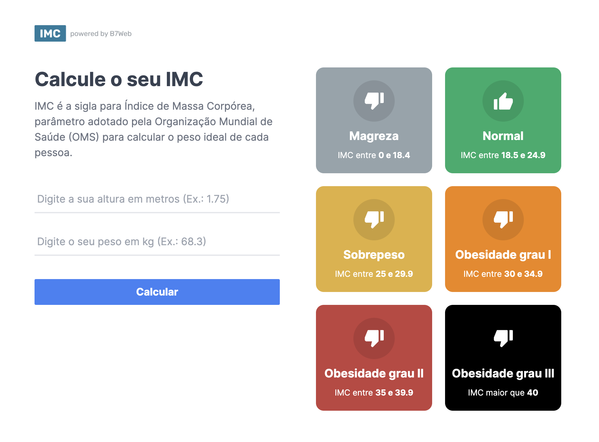
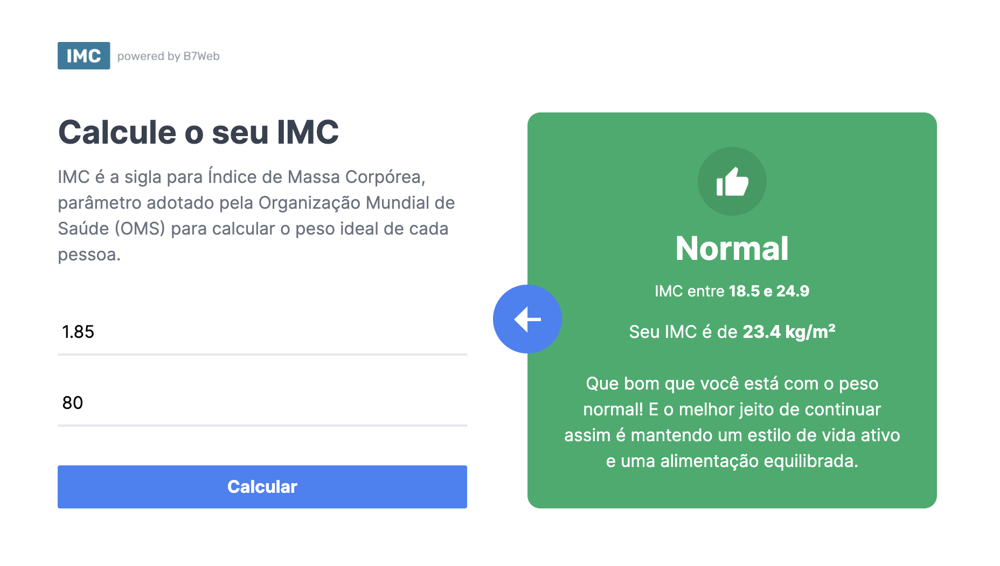

Calculadora de IMC
Calculadora de IMC
Este é um projeto de uma Calculadora de IMC desenvolvida em React e TypeScript no curso de React do B7Web. Com ela é possível calcular o Índice de Massa Corporal (IMC) de uma pessoa com feedback de sua classificação dentro da tabela IMC.


🔗 Acesse o deploy da aplicação
🛠️ Tecnologias
💻 Rodando o projeto localmente
# Clone este repositório
$ git clone https://github.com/welisonw/calculadora-imc.git
# Entre na pasta do projeto
$ cd calculadora-imc
# Instale as dependências
$ npm install ou yarn install
# Inicie o projeto
$ npm run dev ou yarn run dev
# O app vai inicializar em http://localhost:3000